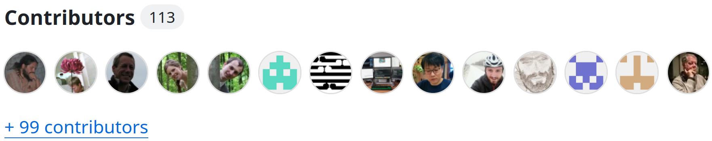
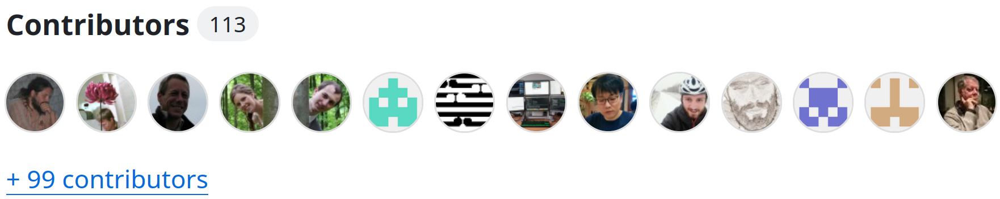
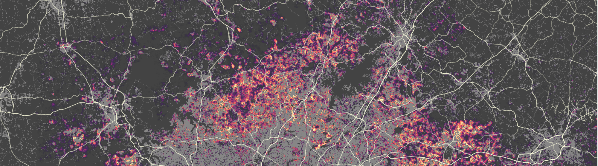
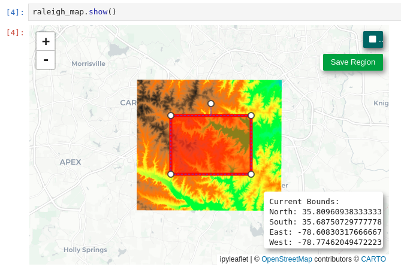
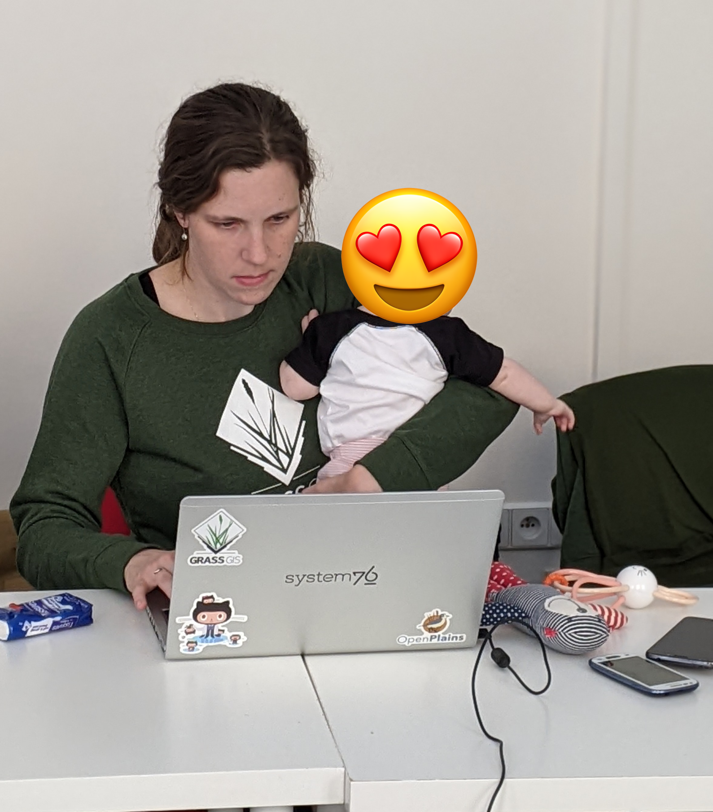
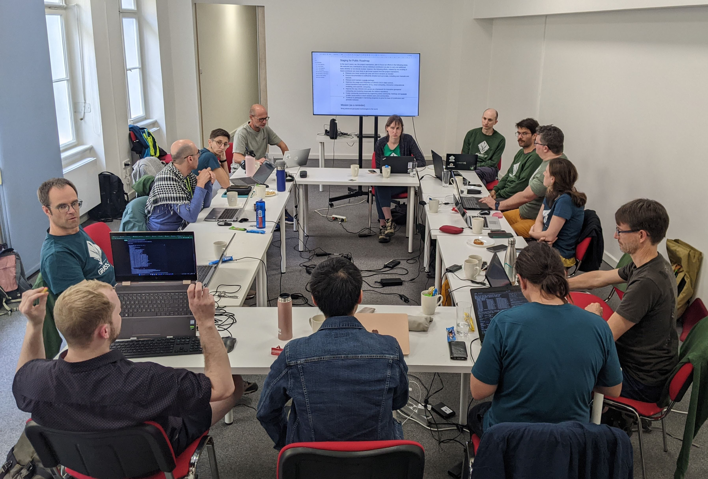
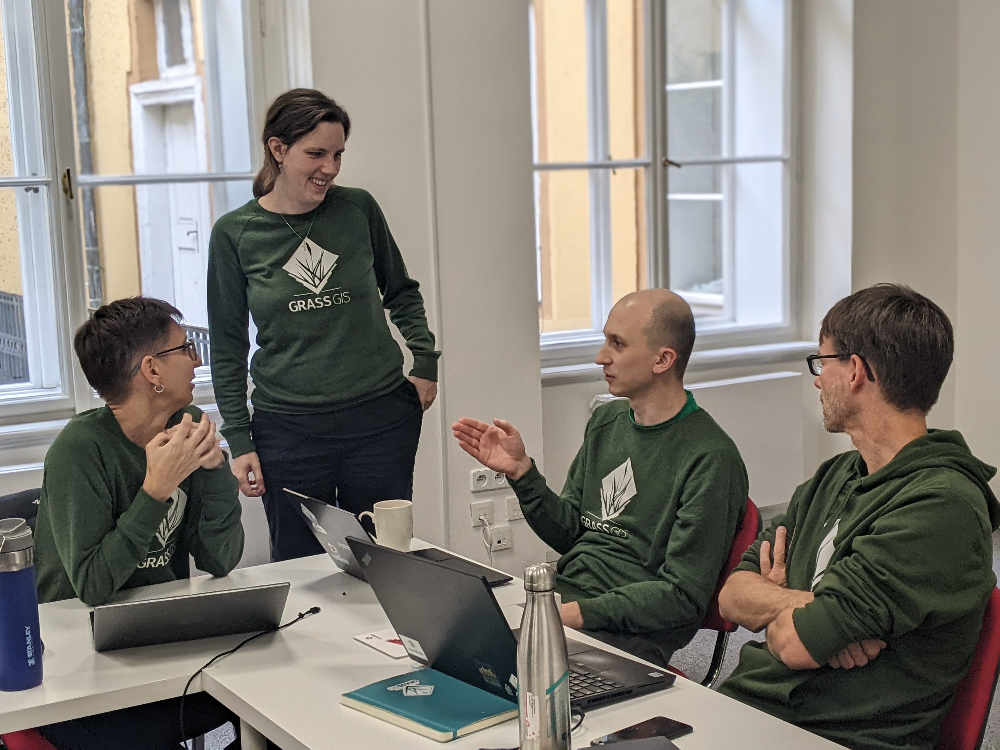
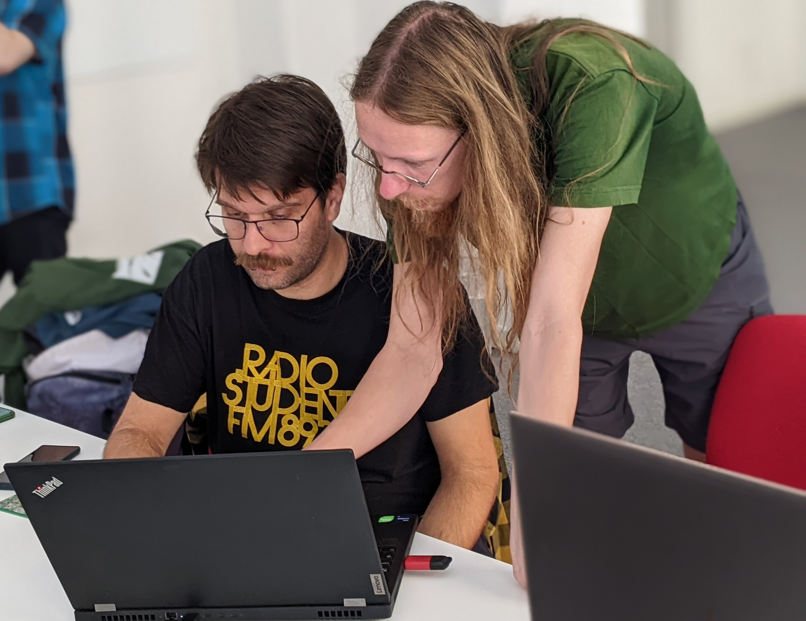

State of GRASS GIS

Veronica Andreo
CONICET
Instituto Gulich (CONAE-UNC)
FOSS4G 2024, Belem (Brazil), December 2-8, 2024
Veronica (Vero) Andreo
- Researcher funded by CONICET at Gulich Institute
- Lic. & PhD in Biology, MSc in Applications of the Spatial Information
- GRASS GIS: Development Team, PSC chair
- OSGeo: Charter member
veroandreo.gitlab.io
The other authors of this talk
Thanks to all those involved! 

What is GRASS GIS?
What is GRASS GIS?
Geek open-source command line GIS

What is GRASS GIS?
Open-source desktop GIS

What is GRASS GIS?
Processing backend in QGIS
 Image source: baharmon.github.io/grass-in-qgis
Image source: baharmon.github.io/grass-in-qgis
What is GRASS GIS?
Geovisualization and data analytics tool in R or quarto notebooks

What is GRASS GIS?
Geovisualization and data analytics tool in Python notebooks

What is GRASS GIS?
Geoprocessing engine running in an HPC environment

What is GRASS GIS?
Geospatial platform for developing custom models

What is GRASS GIS?
Cloud geoprocessing backend
 Image source: neteler.gitlab.io/actinia-introduction/
Image source: neteler.gitlab.io/actinia-introduction/
GRASS is all of that!
Robustness, Stability, Versatility, Scientific foundations

Releases
- 8.4.0 July 2024 Current version for everyday user
- 8.5.0 Preview, Daily Latest reviewed functional code
- 7.8.8 Legacy, August 2023 Maintained legacy version for some production systems

New in GRASS 8.4
Tools: More machine learning
Supervised classification with Support Vector Machines
- i.svm.train: Train a Support Vector Machine
- i.svm.predict: Predict with a Support Vector Machine
 by Maris Nartiss (Nartiss & Melniks 2023)
by Maris Nartiss (Nartiss & Melniks 2023)
Tools: More topology handling
v.fill.holes: Fill holes in areas by keeping only outer boundaries
 by Vaclav Petras
by Vaclav Petras
Tools: Better horizon identification
r.horizon: Output for multiple points, distances, and many other improvements
 Anna Petrasova, funded by NSF Award #2322073, granted to Natrx, Inc.
Anna Petrasova, funded by NSF Award #2322073, granted to Natrx, Inc.
Interfaces: JSON for Text Outputs
JSON output format support(format="json") in multiple tools (v.db.select, t.rast.list, …)
v.db.select roadsmajor format=json
With better integration in Python:
import json
import grass.script as gs
data = gs.parse_command("v.db.select", map="roadsmajor", format="json")
for row in data["records"]:
print(row["ROAD_NAME"])
More coming in 8.5 (r.report, r.info, …)
by Anna Petrasova, Vaclav Petras, Huidae Cho, Kriti Birda, Corey White, and otherslocations became projects!!
The Python API, command line, and GUI are now using project instead of location for the main component of the data hiearchy.

-
~/data-
missouri(location → project)interstate_44(mapset aka sub-project)
-
CLI: --tmp-project with --exec
--tmp-location is now --tmp-project
grass --tmp-project EPSG:3358 --exec \
r.viewshed input=elevation \
output=viewshed coordinates=642964,222890
--tmp-location continues to work
Python API: Simpler Creation of Projects
grass.script Python package:
Creation of new projects greatly simplified in Python without a running session (no more chicken and egg problems)
import grass.script as gs
gs.create_project("cordoba_utm21s", epsg="32721")
gs.setup.init("cordoba_utm21s")
Python API: Animations and ipyleaflet
grass.jupyter Python package:
-
New
grass.jupyter.SeriesMapclass for animating series of vectors or rasters (temporal animations already available) - New option to create a maps with ipyleaflet (will bring interactivity in 8.5)
s = gj.SeriesMap(height = 500)
s.add_rasters(["elevation_shade", "geology", "soils"])
s.add_vectors(["streams", "streets", "viewpoints"])
s.d_barscale()
s.show()
m = InteractiveMap(map_backend="ipyleaflet")
m.add_vector("streams")
m.add_raster("elevation")
m.show()
GUI: New history browser panel
 by Linda Karlovska with a GRASS GIS Student Grant
by Linda Karlovska with a GRASS GIS Student Grant
Addon Tools: Wind-water Interactions
r.windfetch – distance which winds blow without obstruction

by Anna Petrasova, funded by NSF Award #2322073, granted to Natrx, Inc.
Addons tools: STAC support, SDM, faster flow accumulation...
- t.stac toolset: Explore metadata and ingest SpatioTemporal Asset Catalog (STAC) items, collections, and catalogs.
- r.flowaccumulation: Calculates flow accumulation using MEFA parallel algorithm by H. Cho (2023).
- r.maxent.train & r.maxent.predict: train and predict a Maxent model to create a suitability distribution maps.
- ... plotting tools, and tools to streamline access to different types of data.

Mentoring
Mentoring and Student Grants Program
- Student grants to contribute to GRASS GIS: 1 student in 2023-2024.
- Mentoring to integrate GRASS GIS into your workflows: 11 people working on various topics.
Calls are open!
GSoC 2024

Add EODAG support to GRASS GIS
Student: Hamed AshrafMentors: Luca Delucchi, Veronica Andreo, Stefan Blumentrath
i.eodag: Downloads imagery datasets from various providers through the EODAG library.
v.extract input=urbanarea where="NAME = 'Durham'" output=durham
i.eodag -l start=2022-05-25 end=2022-06-01 clouds=30 \
map=durham dataset=S2_MSI_L2A provider=cop_dataspace

Improve GRASS user experience in Jupyter Notebook
Student: Riya SaxenaMentors: Anna Petrasova, Corey White
Enable users to query attribute values and draw geometries, display and change the computational region, support for custom CRS
Add JSON output to different GRASS tools in C
Student: Kriti BirdaMentors: Corey White and Vaclav Petras
r.what map=MOD11B3.A2015001.h11v05.single_LST_Day_6km points=firestations format=json
[
{
"easting": 620856.95858763403,
"northing": 230066.38313210499,
"MOD11B3.A2015001.h11v05.single_LST_Day_6km": {
"value": 14045
}
},
{
"easting": 625331.91859749099,
"northing": 229990.82160762601,
"MOD11B3.A2015001.h11v05.single_LST_Day_6km": {
"value": 14099
}
},
{
"easting": 615797.66547487001,
"northing": 213363.99261982701,
"MOD11B3.A2015001.h11v05.single_LST_Day_6km": {
"value": 14031
}
}
]
Community
 https://grass.osgeo.org/support/community/
https://grass.osgeo.org/support/community/
Community growth
-

- Two new contributors with write access: Edouard Choiniere and Linda Karlovska. Welcome!!
- Three new GRASS GIS babies! Congratulations!!
Community Meeting Prague 2024
https://grasswiki.osgeo.org/wiki/GRASS_Community_Meeting_Prague_2024
 Thanks to our sponsors, individual and anonymous contributors!!Governance
 https://grass.osgeo.org/about/governance/PSC Elections
- PSC elections to replace 4 seats completed by mid-October; 3 new members, 1 re-elected
 https://grasswiki.osgeo.org/wiki/PSC_Election_2024
https://grasswiki.osgeo.org/wiki/PSC_Election_2024
Project Mission and Roadmap
Funding of Maintenance
NSF grant lead by NC State
- NSF grant awarded to NC State, ASU, NMSU, Yale
- to enhance infrastructure
- to revise contributing guidelines
- to support community building
Note: The NSF program is aiming at sustainability, not adding features, fixing bugs, or ongoing maintenance.

Get involved!
All contributions are welcome!
Write code or docs
- Fork the repo and suggest your code or doc changes via pull requests in grass core, grass-addons, or grass-website repositories
- File bug reports or feature requests
- Ask, comment, suggest also in Github Discussions
- Create your own GRASS tool! Now much easier with the cookiecutter template
- Have a look at the new Style guide

Translate in Weblate

Tell others what you know
- Write tutorials for different applications or showcase your GRASS use cases
- Currently at: OSGeo/grass-tutorials
Sponsor GRASS GIS!
- Donation (one-time, any amount), Supporter starts at 10 USD/month, Sponsor starts at 500 USD/year
- Feedback? Talk to me about being part of the solution!


Get in touch with us!